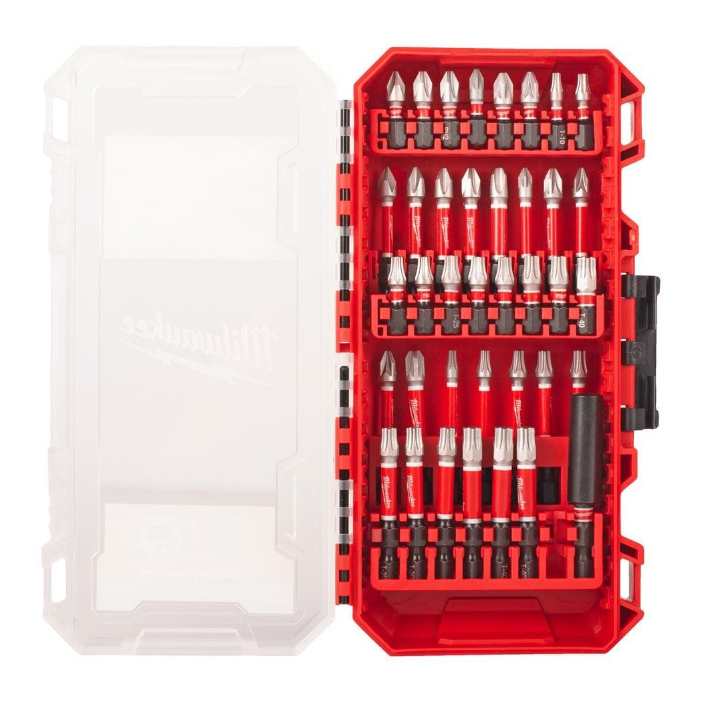

4932492009

| Contents | SHOCKWAVE™ screwdriving bits: 16 x 25 mm length 1 x PH1 / 2 x PH2, 1 x PZ1 / 2 x PZ2 , 1 x TX10 / 1 x TX15 / 2 x TX20 / 3 x TX25 / 2 x TX30 / 1 x TX40. 21 x 50 mm length 1 x PH1 / 3 x PH2 / 1 x PH3, 1 x PZ1 / 3 x PZ2 / 1 x PZ3, 1 x TX10 / 1 x TX15 / 1 x TX20 / 2 x TX25 / 3 x TX30 / 3 x TX40. 1 x SHOCKWAVE™ magnetic bit holder 60 mm length |
| Pack quantity | 38 |